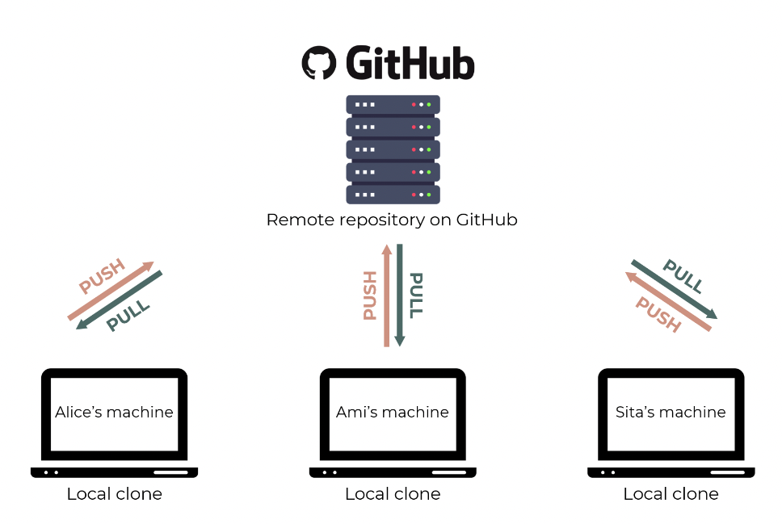

üóìÔ∏è Week 01
Introduction to Computational Social Science
03 Oct 2025
Who am I?
Your lecturer
Associate Professor in Quantitative Social Science
Deputy Programme Director of BSc SSDS
- PhD in Sociology (University of Essex)
- MA in Longitudinal Social Research (University of Essex)
- BA in Economics (Bilkent University)
Experimental Methods
Social Norms
Trust
Intro to CSS
Computational Social Science
It is an interdisciplinary field that advances theories of human behavior by applying computational techniques to large datasets from social media sites, the Internet, or other digitised archives such as administrative records.
Our purpose is to map how such computational tools are currently being applied in empirical settings across social sciences.
Collective Action and Opinion Science
van de Rijt’s et al. leverage Change.org, an online petitioning platform, to conduct field experiments in which samples of petitions are assigned different quantities of signatures as treatments. These experiments demonstrate the importance of cumulative advantage effects in collective actions (van de Rijt et al. 2016)
Flores (2017) uses text data from Twitter to show how anti-immigration laws hardened public opinion against immigration in Arizona
Sociology of Knowledge
- Drawing on data from JSTOR (one of the largest digital repositories of academic journals), King et al. (2017) show that men are more likely to cite themselves than women —a tendency that increased over the past two decades
Virtual Reality and Social Psychology
van Loon et al. (2018) paid university students to perform collaborative tasks, but randomised half of them into a treatment condition where they used virtual reality to take the perspective of the other research participants. This intervention increased prosocial behavior
Virtual reality holds great promise for studying how people respond to social settings within tightly controlled experiments
Cultural Sociology
- Salganik et al. (2006) created an online “music lab” to study how peer influence shapes musical preferences of new artists. In their experiment, participants rated music from obscure bands. In the control condition, participants received no information about its popularity, whereas those in the treatment condition were shown how many times songs were downloaded. Treated respondents were more likely to listen to songs with high download rates and to rate such songs more positively
Economic Sociology and Organisations
- Studies indicate certain network compositions benefit women differently than men. For example, women are more likely to succeed if they are part of an inner circle within a network that is predominantly female (Yang et al. 2019)
Demography and Population Studies
Lin & Lundquist (2013) find that women are more likely to respond to dating invitations from members of dominant racial and ethnic groups, regardless of social distance
Outside of the US context, using 58,880 hetero sexual members drawn from an original sample of 876,658 hetero sexual site users, Potârcă & Mills (2015) identify very strong racial and ethnic homogamy across European countries—and particularly those with ethnically homogeneous populations
Git and GitHub
Why Git?
Git is a version control system. Its original purpose was to help groups of developers work collaboratively on big software projects. Git manages the evolution of a set of files – called a repository – in a sane, highly structured way
We use it to manage the diverse collection of files that make up typical data analytical projects, which often consist of data, figures, reports, and, yes, source code.

Why GitHub?
It provides a home for your Git-based projects on the internet. If you have no idea what we are talking about, think of it as DropBox but much, much better
The remote host acts as a distribution channel for your Git-managed project. It allows other people to see your stuff, sync up with you, and perhaps even make changes
What is the payoff?
Exposure: If someone needs to see your work or if you want them to try out your code, they can easily get it from GitHub. If they use Git, they can clone or fork your repository. If they don’t use Git, they can still browse your project on GitHub like a normal website and even grab everything by downloading a zip archive
Collaboration: If you need to collaborate on data analysis or code development, then everyone should use Git. Use GitHub as your clearinghouse: individuals work independently, then send work back to GitHub for reconciliation and transmission to the rest of the team
- Managing a project via Git/GitHub is much more like the Google Doc scenario and enjoys many of the same advantages. It is definitely more complicated than collaborating on a Google Doc, but this puts you in the right mindset
Who can do what?
A public repository is readable by the world. The owner can grant higher levels of permission to others, such as the ability to push commits
A private repository is invisible to the world. The owner can grant read, write (push), or admin access to others
There is also a formal notion of an organization, which can be useful for managing repository permissions for entire teams of people
GitHub repositories are just like Git repositories, but with some added features. For example, GitHub allows for pull requests, where one developer can propose changes to a project that another developer can review and approve. GitHub also includes tools for project management, such as issue tracking and project boards.
One key thing to remember is that GitHub doesn’t just store a copy of your code files — it stores the entire history of changes to the files, thanks to Git. This allows other collaborators to view the files at an earlier point in time, or even revert the entire project back to an earlier state.
Register a GitHub account
Register an account with GitHub. It’s free!
You will be able to upgrade to a paid level of service, apply discounts, join organizations, etc. in the future, so don’t fret about any of that now. Except your username. You might want to give that some thought
Install or upgrade R and RStudio
Install a pre-compiled binary of R for your OS from here: https://cloud.r-project.org
Already have R installed? Hold on: This is a great time to make sure your R installation is current. Check your current version like so:
Install RStudio Desktop: Already have RStudio? Hold on: This is a great time to upgrade to the latest Preview version. Download it here: https://www.rstudio.com/products/rstudio/download/preview/
Update your R packages:
Installation (GUI)
- Install GitHub Desktop from https://desktop.github.com/

Install Git
- Go to the shell. Enter which git to request the path to your Git executable:
If you are successful, that’s great! You have Git already. No need to install! Move on. If, instead, you see something more like git: command not found, keep reading
macOS users might get an immediate offer to install command line developer tools. Yes, you should accept! Click “Install” and read more below
Installing Git through macOS
Install the Xcode command line tools (not all of Xcode), which includes Git.
Go to the shell and enter one of these commands to elicit an offer to install developer command line tools:
Accept the offer! Click on “Install”.
Here’s another way to request this installation, more directly:
- Please note also that, after upgrading macOS, you might need to re-do the above and/or re-agree to the Xcode license agreement
Installing Git through Windows
Install Git for Windows, also known as msysgit or “Git Bash”, to get Git in addition to some other useful tools, such as the Bash shell
Git for Windows leaves the Git executable in a conventional location, which will help you and other programs, e.g. RStudio, find it and use it. This also supports a transition to more expert use, because the “Git Bash” shell will be useful as you venture outside of R/RStudio
- NOTE: When asked about “Adjusting your PATH environment”, make sure to select “Git from the command line and also from 3rd-party software”. Otherwise, we believe it is good to accept the defaults.
- Note that RStudio for Windows prefers for Git to be installed below C:/Program Files and this appears to be the default. This implies, for example, that the Git executable on my Windows system is found at C:/Program Files/Git/bin/git.exe. Unless you have specific reasons to otherwise, follow this convention.
Introducing yourself to Git
- In the shell
git config --global user.name "Burak Sonmez"
git config --global user.email "burak@example.com"
git config --global --listsubstituting your name and the email associated with your GitHub account.
The usethis package offers an alternative approach. You can set your Git user name and email from within R:
## install if needed (do this exactly once):
## install.packages("usethis")
library(usethis)
use_git_config(user.name = "Burak Sonmez", user.email = "burak@example.org")SOCS0100 – Computational Social Science
Social Networks